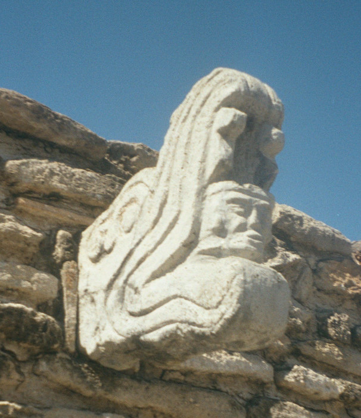
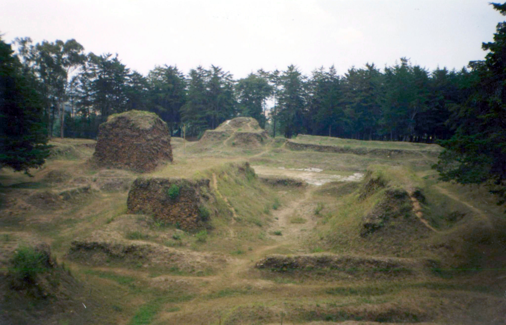
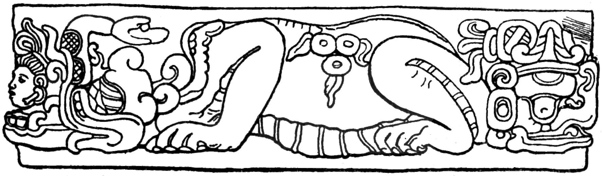

The Temple of Q'uq'umatz
In the K'iche' capital city of Q'umarkaj, there was a circular temple dedicated to worship of Q'uq'umatz. This land was simultaneously occupied by a palace in honor of the Kawek lineage—the ruling dynasty of the city. It’s believed that the idea of circular temples dedicated to Feathered Serpent deities was an ancient tradition in Mesoamerican culture. The Temple of Q'uq'umatz was located directly between the temples for the K'iche' deities Tohil and Awiliz, meant to represent his role as a mediator between the two.
As pictured below, there is nothing left of this temple but a circular impression in the ground amongst the ruins of the city’s main plaza. This was even the case at the beginning of the Spanish Conquest, where the temple had been dismantled not long after. Such an assumption can be made due to the lack of written or artistic records on part of the Colonial era visitors, which often only described an area covered with vegetation. Today, we’re able to estimate that the temple, made up of a circular wall, was around 20 feet across and surrounded a circular platform with a 3 foot gap in between the two. Additionally, there were similarly-sized stone platforms on both the east and west sides of the temple.

Priesthood
The ancient priests of Q’uq’umatz were drawn from an important lineage among the aforementioned Kaweq dynasty. This fact was believed to have brought a source of power and prestige to their lineage. These religious adherents were known as Aj Q’uq’umatz, simply meaning “he of Q’uq’umatz,” though they likely also worshiped Tepeu and Tohil. They often served as stewards in the city of Q’umarkaj and were typically responsible for receiving and guarding any payments or plunder that were returned to the city. Unlike many other historical hierarchies, K’iche’ priests were generally of lower rank than secular officials. However, those belonging to the Kaweq lineage of priests were an exception.
